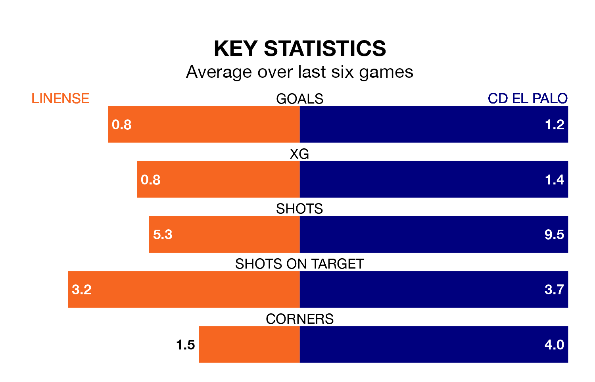

Struggling CD El Palo face Linense away at Estadio Municipal de La Línea de la Concepción on Sunday looking to build on a win in their last league outing.
After securing all three points with a 3-1 victory over Cádiz B on April 7, el Palo sit 17th in the Segunda División RFEF Group 4.
They travel to play a Linense side 10th in the standings, who were held in their last match, 1-1 against UCAM Murcia CF.
Linense are in bad form in the Segunda División RFEF Group 4, with one win and a draw from their last six games.
With two wins and three draws over that period, El Palo's form is better – they have taken nine points from 18, compared to the hosts' four.
With 24 goals in 30 games so far this season, el Palo are scoring at below the league average rate with 0.8 goals per game. And they are conceding more than average, letting in 35 goals at a rate of 1.2 per game.
Linense, meanwhile, are average scorers, with 1.0 goal per game. They have also conceded 1.0 goal per game.
Updated: 10:01 (UTC), 12/04/24